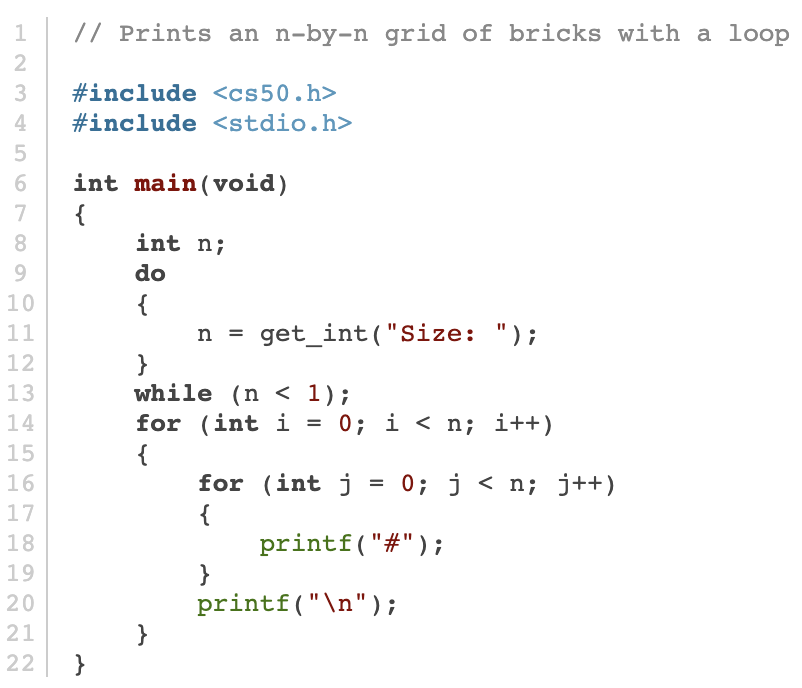
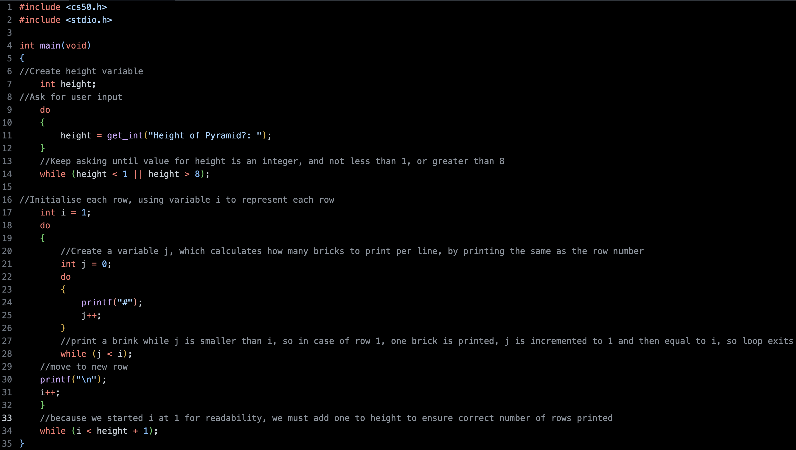

After a short holiday I've returned to continue with my learning in cs50's Introduction to Computer Science. This week, we progress from the visual coding language Scratch to a more powerful language called C.
This will be another introductory language which we will use as a springboard to other languages in later weeks. The aim is to gain an understanding of the typical framework of programming languages.
To start the lecture, we recalled our understanding of the basic ideas in programming, like functions, conditionals, and loops and learnt how they can be executed in C.
We learned that C is a more opaque language than Scratch - requiring a knowledge of a more sophisticated and less human-readable syntax - but there are methods to ensure code is made easier to follow. Methods include formatting of code, efficiency of algorithms, adding clear comments and whether the code solves problem as intended.
Our first program mirrored that of our first Scratch demo, printing “hello, world”. Immediately, it's clear there are a few extra requirements in this language for a simple program to function, such as the inclusion of Standard Input and Output header (stdio.h) and the loading of a main function.
After this demo we learnt about Integrated Development Environments which can be used write, translate and run code and terminal windows. And building on our understanding of the binary system - which computers use to represent and process information - we learnt the difference between source code and machine code.
In this week's study, for example, source code is written in the high-level, moderately human-readable language C, however, in it's initial form, it is not able to give instructions to a computer. The source code, in order for the computer to understand it, needs to be translated - or compiled - into machine code by a program called a compiler. In the IDE provided by this course, we can compile our source code by using the 'make' command.
After an overview of Linux concepts necessary for this weeks problems sets we moved onto working through some basic programs in C, in order to introduce to us to the syntax and style requirements of C and how it uses data types, functions, arguments, loops, operators, etc.
One element of C's style is the ability it has to condense code into more succint instructions. One such example is a generic while loops that involves counter incrementing.

Which with some rearranging can be displayed in this shortened format.

To end the lecture, we discussed the limitations of 32-bit and less-so 64-bit systems when representing real numbers with precision, and how this imprecision leads to integer overflow. This happens when an arithmetic operation requires a value which is outside the range of a computer's capacity to represent with bits i.e. numbers larger than approx. ± 2.2 billion cannot be represented by 32-bits). We discussed some solutions to these problems, or, in other words, how to make code more “correct”.
Problem Sets
To complete the week's work we needed to complete to problem sets. The first involved, recreating the pyramid in the original Super Mario Bros using ASCII art. The second tasked us with calculating the minimum number of coins needed when dispensing change.
The second task had most of the code provided, and just needed me to make some changes, inputing simple arithmetic into several pre-formed functions. It was more of an exercise in repetition to drill in familiarity with the syntax of C, so not much explanation is necessary.
The first task - recreating the Mario pyramid using # as bricks - was a greater challenge, and worth recounting.

In the lecture we were shown how to create a square grid of n x n size, with n being a size inputted by user.

The code looked like this.

This code works by nesting one loop within another. The outer loop (using int i) is responsible for beginning each row, while the row number is less than n. The inner loop (using int j) prints a number of # corresponding to n.
I inferred the code we would need to print the Mario pyramid would follow a similar scheme. After several failed attempts to print the pyramids out right, I decided to break down my task into segments. In the first segment, I decided to simply try to print the correct number of # I would need per line (ie row one would need one #, row two needed two #, etc.), looking like the image below.
This was the code for the back-to-front pyramid

Once I had this pyramid, it took a litle head-scratching for me to work out how to print the mirror image. I realised that I needed to add a step within the loop, one that printed a space using the inverse of the formula to print hashes. This diagram, replacing spaces with periods, shows this correlation. In row 1, 7 periods would need to be printed, and one hash.

The code I ended up with looked like this.
Resulting in the correct solution.

This was another rewarding week!

Just a quick one here. I have started cs50's Introduction to Computer Science and made it through week 0. In this block we were introduced to the fundamental concepts of computer science.
We touched on how the binary system is used to represent all kinds of information e.g. text, images, videos, sounds, emojis, etc on computers. We learnt computer science can be simplified into two components - inputs and outputs, and that essentially, computer science is a form of problem solving, using algorithms (step-by-step instructions on how to process inputs to produce required outputs).
Through a basic example (finding a name in a phone book) we visualised how an algorithm's efficiency can be calculated. We used this example to show how an algorithm's efficiency can be represented using a simple chart.

We then experminted with writing 'pseudocode' using quasi functions (pick up), conditionals (if, else if), loops (for, return to line x) and boolean expressions (is person on page? yes or no). The pseudocode that was used to find any name in the phone book was this:
1 Pick up phone book
2 Open to middle of phone book
3 Look at page
4 If person is on page
5 Call person
6 Else if person is earlier in book
7 Open to middle of left half of book
8 Go back to line 3
9 Else if person is later in book
10 Open to middle of right half of book
11 Go back to line 3
12 Else
13 Quit
The lecture finished with an introduction to the graphical programming language called Scratch, developed by MIT. This language has a highly human-readable form and bridges the gap between pseudocode and computer code. We had a look at some examples of previous student's projects, before we were sent out into the ether to come up with and execute our own idea.
After a short time experimenting with the language, I decided to recreate the Shell Game in Scratch. Here's my finished project.
Hello world! It's been quite some time since my last blog, back at the beginning of my journalism career.
Now I found myself neither gainfully employed as a member of the press nor in the manufacturing field I followed it into. And yet, here I am, more excited for the future than I have ever been. So what exactly am I so excited about? Before I start, I'd like to acknowledge I will be breaking the cardinal rule of journalism: never, EVER put yourself in the story. However, not only am I allowing myself to ignore my training - but in this era of personal branding - it is encouraged. I can BE the story.
So then, what is my story?
There are many ways to follow this headline. The truest account - and please respect what remains of my journalistic integrity - goes something like this.
I've always harboured an interest in computers so when the Digital Jobs Program came on my radar I jumped at the opportunity - even though I was employed at the time as an assistant manager at a manufacturing company. I choose the AWS Re/Start course because it covered a wide variety of topics and would provide a decent foundation for a career change. I didn't know much about cloud computing but the syllabus really appealed to me and I was ready to give it my all.
So I left my job to take on this program and take a step into the great unknown.
Luckily for me, I loved the course from the outset. I was spending my days and evenings absorbing as much new information as I possibly could. I then came across Forest Brazeal's 'Cloud Resume Challenge' which is touted as the ultimate test for anyone looking to get into a cloud career. The premise of the project is simple - host your resume in the cloud. There are, however, several conditions.
1. Get an AWS certification
2. Write the resume in HTML & styled with CSS
3. Deploy as an Amazon S3 Static website
4. Use a custom DNS Domain name with HTTPS security
5. Include a visitor counter made from Javascript, DynamoDB, API Gateways and Lambda functions (written in Python)
6. Python tests for Lambda
7. Deploy all resources via a Serverless Application Model (SAM) template instead of using the console!
8. Use Github as source control, and Github Actions for CI/CD
Needless to say, I had never done anything like this before - but I saw it as an opportunity to build on my learning. It was a huge challenge, and took me several weeks alongside my coursework to complete. There where many evenings when I had absolutely no clue how to tackle the next step. But with a little bit of research and a lot of head-scratching and persistence, I'm happy to report I overcame the challenge! I'll go deeper into specific challenges I faced during this project in my next post.

I made this diagram showing my architecture and you can see the finished project here. It was such a rewarding experience and my confidence in my practical skills has skyrocketed.
If you've made it this far - I highly recommend the challenge if you're looking to test your skills! There's a supportive community and a plethora of learning materials available at the Cloud Resume Challenge. Finally, I'd like to thank Forest Brazeal and the CRC community for their efforts in making the cloud accessible to all.